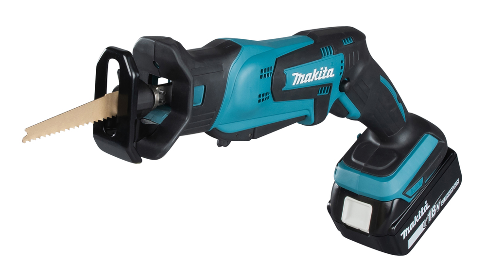
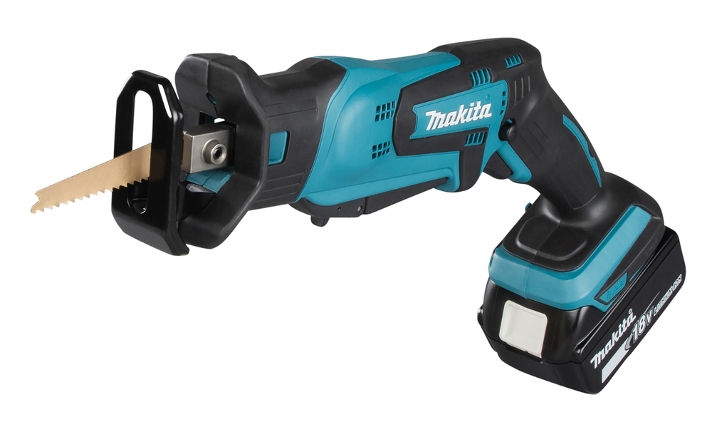
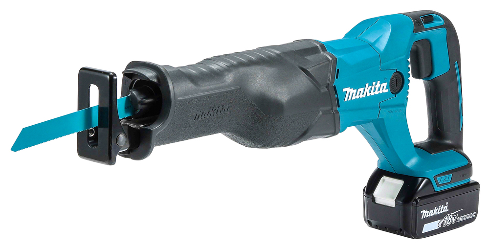
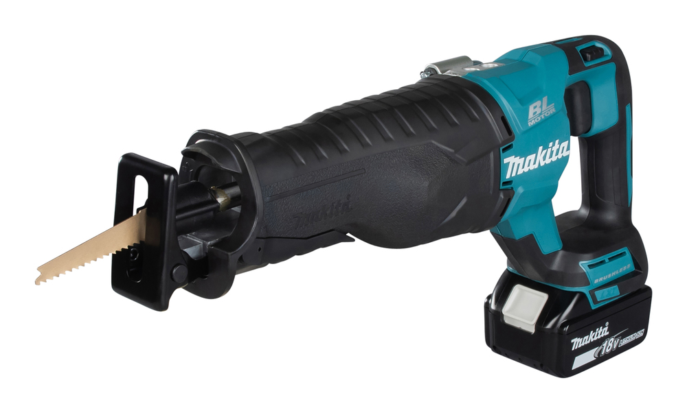
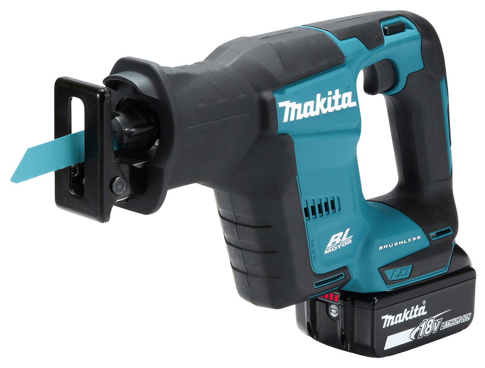
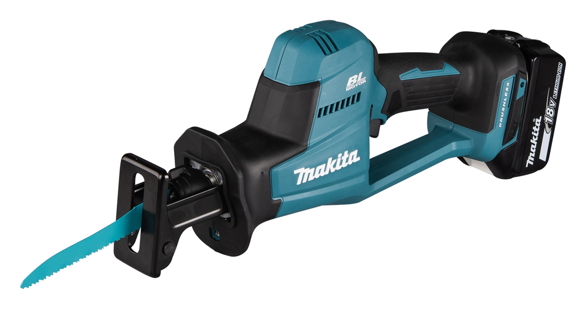
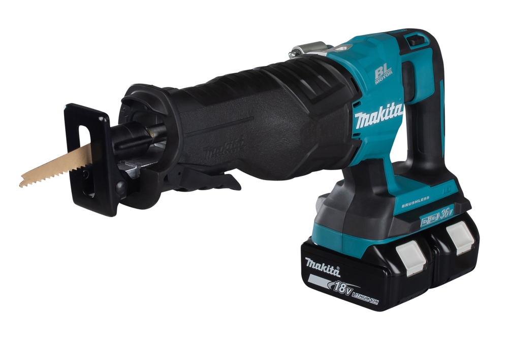

Reciprocating Saws Comparison
|  |  |  |  |  |  |  | |
| Model | DJR183 | DJR185 | DJR186 | DJR187 | DJR188 | DJR189 | DJR360 |
| Voltage (V) | 18 | 18 | 18 | 18 | 18 | 18 | 2 x 18 |
| Description | Compact saw for light use and tight spaces | Compact saw that also accepts jigsaw blades | Efficient basic reciprocating saw | Brushless two-speed saw for pro use | Compact brushless saw with short frame | Brushless one-handed saw with low vibration | 36V (2x18) brushless two-speed saw |
| Motor | Brushed | Brushed | Brushed | Brushless | Brushless | Brushless | Brushless |
| Max Cutting Capacity - Wood (mm) | 50 | 50 | 255 | 255 | 255 | 255 | 255 |
| Max Cutting Capacity - Steel Pipe (mm) | 50 | 50 | 130 | 130 | 130 | 130 | 130 |
| Strokes per Minute (SPM) | 0-3000 | 0-3000 | 0-2800 | 0-2300 / 3000 | 0-3000 | 0-3100 | 0-2300 / 3000 |
| Stroke Length (mm) | 13 | 13 | 32 | 32 | 20 | 22 | 32 |
| Vibration - Cutting Boards (m/s^2) | 8.0 | 8.0 | 13.0 | 16.5 | 15.5 | 9.0 | 16.5 |
| Length (mm) | 398 | 398 | 486 | 439 | 316 | 410 | 449 |
| Weight with Battery (kg) | 1.5 - 1.8 | 1.5 - 1.8 | 3.5 - 3.8 | 3.4 - 3.8 | 2.6 - 2.9 | 2.2 - 2.5 | 4.0 - 4.7 |
Understanding Reciprocating Saw Specifications
Max Cutting Capacity - Wood (mm)
This is the deepest wood cut each saw can handle in one pass. Staying within this limit keeps cuts clean, protects the motor, and extends blade life.
Max Cutting Capacity - Steel Pipe (mm)
The largest pipe diameter the saw can cut efficiently. Matching the tool to the pipe size prevents binding, overheating, and premature blade wear.
Strokes per Minute (SPM)
SPM is the speed range of the reciprocating action. Higher speeds clear soft material quickly; lower speeds add control for metal or plunge cuts.
Vibration - Cutting Boards (m/s^2)
Lower vibration means better comfort and control during long cuts. Choose calmer tools for overhead or one-handed work to reduce fatigue.